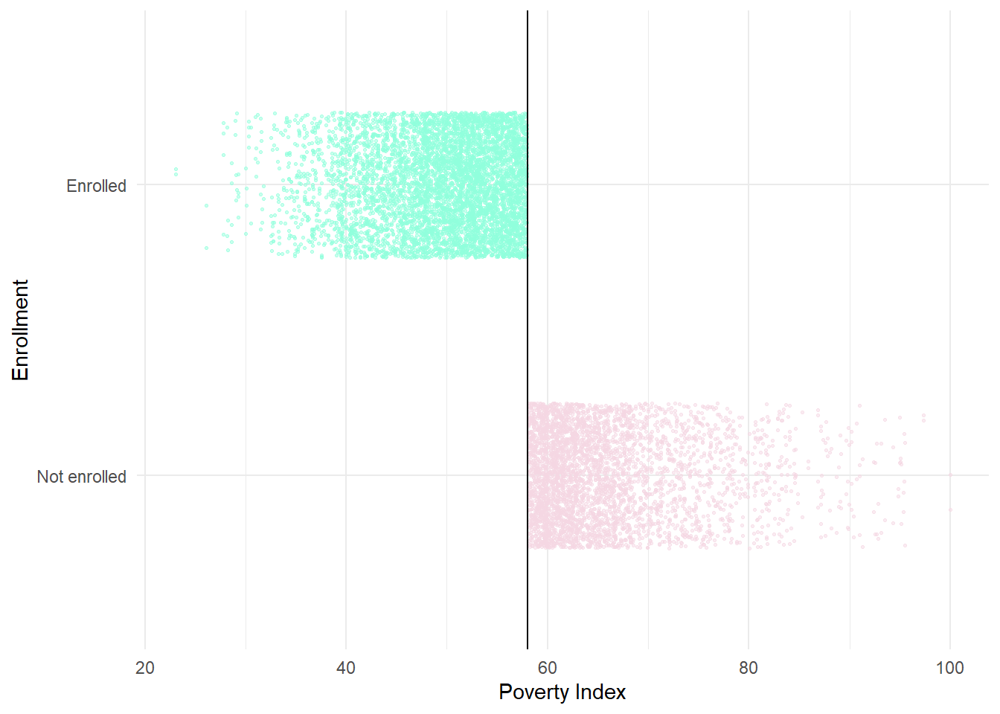
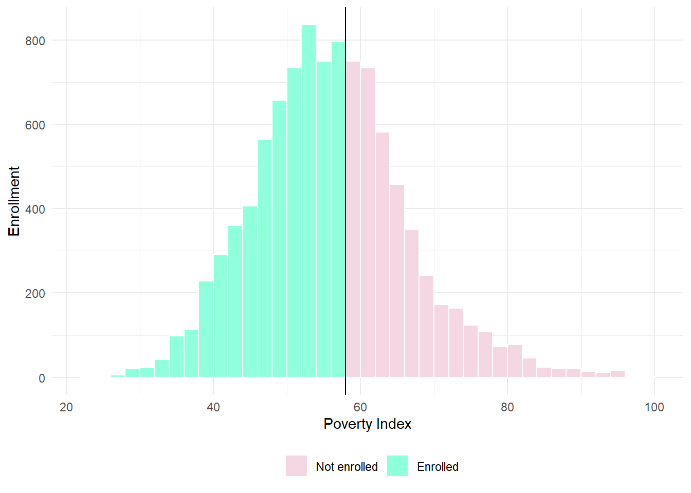
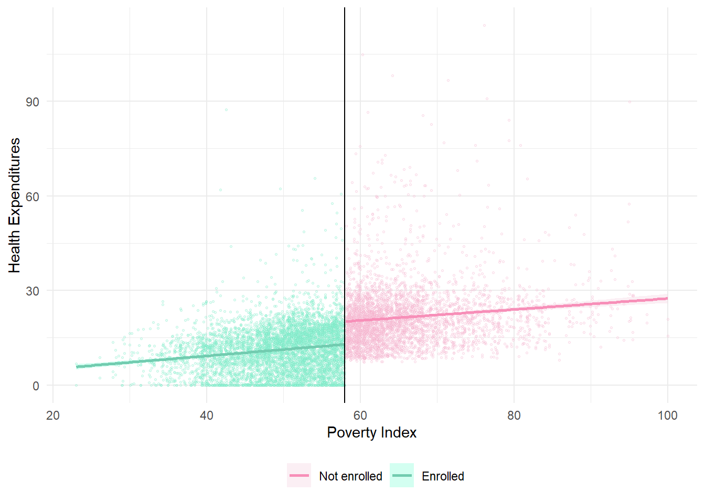

library(tidyverse) # For ggplot, mutate(), filter(), and friends
library(broom) # For converting models to data frames
library(estimatr) # For lm_robust() and iv_robust()
library(modelsummary) # For showing side-by-side regression tables
library(MatchIt) # For matching
library(rdrobust) # For nonparametric RD
library(rddensity) # For nonparametric RD density tests
library(haven) # For reading Stata files
library(kableExtra)
knitr::opts_chunk$set(message = FALSE, warning = FALSE)
set.seed(80085) # Make any random stuff be the same every time you run this
# Round everything to 3 digits by default
options("digits" = 3)
# Turn off the message that happens when you use group_by() and summarize()
options(dplyr.summarise.inform = FALSE)
# Load raw data
hisp_raw <- read_stata("data/evaluation.dta")
# Make nice clean dataset to use for the rest of the assignment
hisp <- hisp_raw %>%
# Having a numeric 0/1 column is sometimes helpful for things that don't like
# categories, like matchit()
mutate(enrolled_num = enrolled) %>%
# Convert these 0/1 values to actual categories
mutate(eligible = factor(eligible, labels = c("Not eligible", "Eligible")),
enrolled = factor(enrolled, labels = c("Not enrolled", "Enrolled")),
round = factor(round, labels = c("Before", "After")),
treatment_locality = factor(treatment_locality, labels = c("Control", "Treatment")),
promotion_locality = factor(promotion_locality, labels = c("No promotion", "Promotion"))) %>%
# Get rid of this hospital column because (1) we're not using it, and (2) half
# of the households are missing data, and matchit() complains if any data is
# missing, even if you're not using it
select(-hospital)The World Bank’s Impact Evaluation in Practice has used a hypothetical example of a health insurance program throughout the book. This Health Insurance Subsidy Program (HISP) provides subsidies for buying private health insurance to poorer households, with the goal of lowering personal health expenditures, since people can rely on insurance coverage instead of paying out-of-pocket. Think of the HISP as a version of the Affordable Care Act (ACA, commonly known as Obamacare).
The dataset includes a number of important variables you’ll use throughout this assignment:
| Variable name | Description |
|---|---|
health_expenditures |
Out of pocket health expenditures (per person per year) |
eligible |
Household eligible to enroll in HISP |
enrolled |
Household enrolled in HISP |
round |
Indicator for before and after intervention |
treatment_locality |
Household is located in treatment community |
poverty_index |
1-100 scale of poverty |
promotion_locality |
Household is located in community that received random promotion |
enrolled_rp |
Household enrolled in HISP following random promotion |
It also includes several demographic variables about the households. Each of these are backdoor confounders between health expenditures participation in the HISP:
| Variable name | Description |
|---|---|
age_hh |
Age of the head of household (years) |
age_sp |
Age of the spouse (years) |
educ_hh |
Education of the head of household (years) |
educ_sp |
Education of the spouse (years) |
female_hh |
Head of household is a woman (1 = yes) |
indigenous |
Head of household speaks an indigenous language (1 = yes) |
hhsize |
Number of household members |
dirtfloor |
Home has a dirt floor (1 = yes) |
bathroom |
Home has a private bathroom (1 = yes) |
land |
Number of hectares of land owned by household |
hospital_distance |
Distance to closest hospital (km) |
You will use each of the five main econometric approaches for estimating causal effects to measure the effect of HISP on household health expenditures. Don’t worry about conducting in-depth baseline checks and robustness checks. For the sake of this assignment, you’ll do the minimum amount of work for each method to determine the causal effect of the program.
Task 1: RCTs
To measure the effect of HISP accurately, World Bank researchers randomly assigned different localities (villages, towns, cities, whatever) to treatment and control groups. Some localities were allowed to join HISP; others weren’t.
Here’s what you should do:
- Make a new dataset that only looks at eligible households (
filter(eligible == "Eligible"))
eligible <- hisp %>%
filter(eligible == "Eligible")- Make a new dataset that only looks at eligible households after the experiment (
filter(round == "After"))
after_elig <- eligible %>%
filter(round == "After")- Calculate the average health expenditures in treatment and control localities (
treatment_locality) before the intervention (round == "Before"). Were expenditures fairly balanced across treatment and control groups before the intervention?
b4 <- hisp %>%
filter(round == "Before") %>%
group_by(treatment_locality) %>%
summarise(loc_mean = mean(health_expenditures))
b4# A tibble: 2 × 2
treatment_locality loc_mean
<fct> <dbl>
1 Control 17.4
2 Treatment 17.0Yes, the treatment and control groups are fairly balanced before the treatment; there was only a 0.372 difference.
Calculate the average health expenditures in treatment and control localities after the intervention (
round == "After")
after <- hisp %>%
filter(round == "After") %>%
group_by(treatment_locality) %>%
summarise(loc_mean = mean(health_expenditures))
after# A tibble: 2 × 2
treatment_locality loc_mean
<fct> <dbl>
1 Control 20.1
2 Treatment 13.7- Determine the difference in average health expenditures across treatment and control after the intervention
- After the treatment, the treatment and control groups now vary in average health expenditures; the difference is now 6.406, in favor of the treatment group.
- Using data after the intervention, use linear regression to determine the difference in means and statistical significance of the difference (hint: you’ll want to use
health_expenditures ~ treatment_locality). Uselm_robust()from the estimatr package and cluster bylocality_identifierif you’re feeling adventurous.
all_after <- hisp %>%
filter(round == "After")
he_after <- lm(health_expenditures ~ treatment_locality, data = all_after)
tidy(he_after)# A tibble: 2 × 5
term estimate std.error statistic p.value
<chr> <dbl> <dbl> <dbl> <dbl>
1 (Intercept) 20.1 0.163 123. 0
2 treatment_localityTreatment -6.41 0.230 -27.8 2.06e-164he_after2 <- lm_robust(health_expenditures ~ treatment_locality,
data = all_after, clusters = locality_identifier)
tidy(he_after2) term estimate std.error statistic p.value conf.low
1 (Intercept) 20.06 0.379 52.9 6.81e-48 19.30
2 treatment_localityTreatment -6.41 0.504 -12.7 3.32e-23 -7.41
conf.high df outcome
1 20.83 53.5 health_expenditures
2 -5.41 108.6 health_expenditures- Create another model that controls for the following variables:
age_hh + age_sp + educ_hh + educ_sp + female_hh + indigenous + hhsize + dirtfloor + bathroom + land + hospital_distance. (Uselm_robust()again if you’re brave.) Does the estimate of the causal effect change?
he_after_con <- lm(health_expenditures ~ treatment_locality + age_hh + age_sp +
educ_hh + educ_sp + female_hh + indigenous + hhsize +
dirtfloor + bathroom + land + hospital_distance,
data = all_after)
tidy(he_after_con)# A tibble: 13 × 5
term estimate std.error statistic p.value
<chr> <dbl> <dbl> <dbl> <dbl>
1 (Intercept) 29.0 0.652 44.4 0
2 treatment_localityTreatment -6.13 0.194 -31.6 3.10e-209
3 age_hh 0.108 0.0118 9.13 8.18e- 20
4 age_sp 0.00799 0.0136 0.589 5.56e- 1
5 educ_hh 0.113 0.0437 2.58 9.98e- 3
6 educ_sp -0.00980 0.0478 -0.205 8.37e- 1
7 female_hh 1.09 0.353 3.09 2.00e- 3
8 indigenous -2.81 0.224 -12.6 7.03e- 36
9 hhsize -2.38 0.0458 -52.0 0
10 dirtfloor -3.04 0.212 -14.4 2.72e- 46
11 bathroom 0.971 0.205 4.74 2.20e- 6
12 land 0.165 0.0320 5.17 2.34e- 7
13 hospital_distance -0.00600 0.00247 -2.43 1.51e- 2he_after_con2 <- lm_robust(health_expenditures ~ treatment_locality + age_hh + age_sp +
educ_hh + educ_sp + female_hh + indigenous + hhsize +
dirtfloor + bathroom + land + hospital_distance,
data = all_after, clusters = locality_identifier)
tidy(he_after_con2) term estimate std.error statistic p.value conf.low
1 (Intercept) 28.95706 0.80870 35.807 5.46e-58 27.3522
2 treatment_localityTreatment -6.12955 0.40172 -15.258 8.37e-29 -6.9258
3 age_hh 0.10801 0.01495 7.224 1.15e-10 0.0783
4 age_sp 0.00799 0.01643 0.486 6.28e-01 -0.0246
5 educ_hh 0.11265 0.04600 2.449 1.60e-02 0.0214
6 educ_sp -0.00980 0.05009 -0.196 8.45e-01 -0.1091
7 female_hh 1.08976 0.47396 2.299 2.37e-02 0.1489
8 indigenous -2.80641 0.37524 -7.479 4.02e-11 -3.5515
9 hhsize -2.38237 0.06408 -37.180 5.05e-62 -2.5094
10 dirtfloor -3.04384 0.29840 -10.201 2.25e-17 -3.6355
11 bathroom 0.97106 0.25513 3.806 2.41e-04 0.4650
12 land 0.16545 0.04006 4.130 1.01e-04 0.0855
13 hospital_distance -0.00600 0.00454 -1.320 1.91e-01 -0.0151
conf.high df outcome
1 30.56195 97.7 health_expenditures
2 -5.33334 108.9 health_expenditures
3 0.13769 96.9 health_expenditures
4 0.04059 99.6 health_expenditures
5 0.20387 104.6 health_expenditures
6 0.08953 104.5 health_expenditures
7 2.03059 95.8 health_expenditures
8 -2.06131 93.4 health_expenditures
9 -2.25531 104.4 health_expenditures
10 -2.45215 104.7 health_expenditures
11 1.47710 102.1 health_expenditures
12 0.24538 68.6 health_expenditures
13 0.00306 71.3 health_expenditures- Show the results from the two regressions in a side-by-side table if you want
- The estimate of the causal effect changes, but by very little. Though the expected change in health expenditures fell from -6.406 to -6.13, that is a very small difference, and it remains significant at the p < .001 level.
together <- modelsummary(list("Health Expenditures" = he_after,
"Health Expenditures w/ Controls" = he_after_con),
coef_rename = c(treatment_localityTreatment = "Treatment",
age_hh = "Age",
age_sp = "Spouse's Age",
educ_hh = "Education",
educ_sp = "Spouse's Education",
female_hh = "Head of Household is a Woman",
indigenous = "Indigenous Language Speaker",
hhsize = "Household Members",
dirtfloor = "Dirt Floor",
bathroom = "Private Bathroom",
land = "Land Owned",
hospital_distance = "Distance to Hospital"),
output = "kableExtra",
estimate = "{estimate}{stars}",
statistic = "statistic",
fmt = 3,
gof_omit = "IC|Log|Adj|p\\.value|statistic|se_type|F|RMSE") %>%
row_spec(c(1,3,5,7,9,11,13,15,17,19,21,23,25), background = "#8DE4FF")
together| Health Expenditures | Health Expenditures w/ Controls | |
|---|---|---|
| (Intercept) | 20.064*** | 28.957*** |
| (123.322) | (44.412) | |
| Treatment | −6.406*** | −6.130*** |
| (−27.850) | (−31.628) | |
| Age | 0.108*** | |
| (9.130) | ||
| Spouse's Age | 0.008 | |
| (0.589) | ||
| Education | 0.113** | |
| (2.577) | ||
| Spouse's Education | −0.010 | |
| (−0.205) | ||
| Head of Household is a Woman | 1.090** | |
| (3.091) | ||
| Indigenous Language Speaker | −2.806*** | |
| (−12.555) | ||
| Household Members | −2.382*** | |
| (−51.981) | ||
| Dirt Floor | −3.044*** | |
| (−14.359) | ||
| Private Bathroom | 0.971*** | |
| (4.737) | ||
| Land Owned | 0.165*** | |
| (5.174) | ||
| Distance to Hospital | −0.006* | |
| (−2.430) | ||
| Num.Obs. | 9914 | 9914 |
| R2 | 0.073 | 0.344 |
Task 2: Inverse probability weighting and/or matching
Instead of using experimental data, we can estimate the causal effect using observational data alone by closing all the confounding backdoors. In this task, you should choose one of two approaches: inverse probability weighting or matching. AGAIN: you only need to do one of these. You can do both for fun, but you only need to do one.
Do the following (for both approaches):
- Make a dataset based on
hispthat only includes observations from after the intervention (round == "After"). Even though you technically have a column that indicates if the household was in the treatment group (treatment_locality), you’re going to pretend that you don’t have it This is now observational data—all you know is that a bunch of households participated in HISP and a bunch didn’t.
after2 <- hisp %>%
filter(round == "After")- Run a naive model that estimates the effect of HISP enrollment on health expenditures (
health_expenditures ~ enrolled) using this after-only observational data. What is the effect? Is this accurate? Why or why not?
model_naive <- lm(health_expenditures ~ enrolled, data = after2)
tidy(model_naive)# A tibble: 2 × 5
term estimate std.error statistic p.value
<chr> <dbl> <dbl> <dbl> <dbl>
1 (Intercept) 20.7 0.124 167. 0
2 enrolledEnrolled -12.9 0.227 -56.8 0If you’re using inverse probability weighting, do the following:
- Use logistic regression to model the probability of enrolling in the HISP. Hint: you’ll need to use
glm()(replace stuff in<>like<THINGS>with actual column names or dataset names). Also, note that this code below isn’t in an actual R chunk, so don’t try to run it.
model_logit <- glm(enrolled ~ COUNFOUNDER1 + COUNFOUNDER2 + ...,
data = NAME_OF_YOUR_AFTER_DATASET,
family = binomial(link = "logit"))model_logit <- glm(enrolled ~ poverty_index + age_hh + educ_hh + female_hh + indigenous +
hhsize + dirtfloor + bathroom + land + hospital_distance,
data = after2,
family = binomial(link = "logit"))
tidy(model_logit)# A tibble: 11 × 5
term estimate std.error statistic p.value
<chr> <dbl> <dbl> <dbl> <dbl>
1 (Intercept) 5.93 0.252 23.5 3.91e-122
2 poverty_index -0.128 0.00379 -33.8 2.66e-250
3 age_hh -0.00655 0.00211 -3.10 1.95e- 3
4 educ_hh 0.0216 0.0109 1.98 4.82e- 2
5 female_hh -0.00546 0.0942 -0.0579 9.54e- 1
6 indigenous 0.143 0.0560 2.56 1.06e- 2
7 hhsize 0.0256 0.0133 1.92 5.47e- 2
8 dirtfloor 0.0521 0.0585 0.891 3.73e- 1
9 bathroom 0.0162 0.0530 0.307 7.59e- 1
10 land -0.0176 0.00962 -1.83 6.70e- 2
11 hospital_distance 0.00186 0.000640 2.91 3.56e- 3- Generate propensity scores for enrollment in the HISP using something like this code (again, this isn’t a chunk; don’t try to run it):
enrolled_propensities <- augment_columns(MODEL_NAME, NAME_OF_YOUR_AFTER_DATASET,
type.predict = "response") %>%
rename(p_enrolled = .fitted) enrolled_propensities <- augment_columns(model_logit, after2,
type.predict = "response") %>%
rename(p_enrolled = .fitted)- Add a new column to
enrolled_propensitieswithmutate()that calculates the inverse probability weights using this formula (hint: “propensity” will bep_enrolled; “Treatment” will betreatment_num):
\[ \frac{\text{Treatment}}{\text{Propensity}} + \frac{1 - \text{Treatment}}{1 - \text{Propensity}} \]
enrolled_ipw <- enrolled_propensities %>%
mutate(ipw = (enrolled_num / p_enrolled) + ((1 - enrolled_num) / (1 - p_enrolled)))- Run a model that estimates the effect of HISP enrollment on health expenditures (
health_expenditures ~ enrolled) using theenrolled_propensitiesdata, weighting by your new inverse probability weights column. What is the causal effect of HISP on health expenditures? How does this compare to the naive model? Which do you believe more? Why?
model_ipw <- lm(health_expenditures ~ enrolled,
data = enrolled_ipw,
weights = ipw)
tidy(model_ipw)# A tibble: 2 × 5
term estimate std.error statistic p.value
<chr> <dbl> <dbl> <dbl> <dbl>
1 (Intercept) 19.5 0.125 155. 0
2 enrolledEnrolled -11.1 0.194 -57.1 0- Show the results from the two regressions in a side-by-side table if you want
together2 <- modelsummary(list("Naive" = model_naive,
"Logit" = model_logit,
"IPW" = model_ipw),
coef_rename = c(treatment_localityTreatment = "Treatment",
age_hh = "Age",
age_sp = "Spouse's Age",
educ_hh = "Education",
educ_sp = "Spouse's Education",
female_hh = "Head of Household is a Woman",
indigenous = "Indigenous Language Speaker",
hhsize = "Household Members",
dirtfloor = "Dirt Floor",
bathroom = "Private Bathroom",
land = "Land Owned",
hospital_distance = "Distance to Hospital",
poverty_index = "Poverty Index"),
output = "kableExtra",
estimate = "{estimate}{stars}",
statistic = "statistic",
fmt = 3,
gof_omit = "IC|Log|Adj|p\\.value|statistic|se_type|F|RMSE") %>%
row_spec(c(1,3,5,7,9,11,13,15,17,19,21,23), background = "#8DE4FF")
together2| Naive | Logit | IPW | |
|---|---|---|---|
| (Intercept) | 20.707*** | 5.932*** | 19.458*** |
| (167.126) | (23.502) | (155.425) | |
| enrolledEnrolled | −12.867*** | −11.057*** | |
| (−56.793) | (−57.111) | ||
| Poverty Index | −0.128*** | ||
| (−33.791) | |||
| Age | −0.007** | ||
| (−3.097) | |||
| Education | 0.022* | ||
| (1.975) | |||
| Head of Household is a Woman | −0.005 | ||
| (−0.058) | |||
| Indigenous Language Speaker | 0.143* | ||
| (2.557) | |||
| Household Members | 0.026+ | ||
| (1.921) | |||
| Dirt Floor | 0.052 | ||
| (0.891) | |||
| Private Bathroom | 0.016 | ||
| (0.307) | |||
| Land Owned | −0.018+ | ||
| (−1.831) | |||
| Distance to Hospital | 0.002** | ||
| (2.915) | |||
| Num.Obs. | 9914 | 9914 | 9914 |
| R2 | 0.246 | 0.248 |
If you’re using matching, do the following:
- Use
matchit()to find the best matches for enrollment based on Mahalanobis nearest neighbor matching. Thematchit()function can’t work with categorical variables, so make sure you useenrolled_numinstead ofenrolled. Use code similar to this (replace stuff in<>like<THINGS>with actual column names or dataset names). Also, note that this code below isn’t in an actual R chunk, so don’t try to run it.
matched <- matchit(enrolled_num ~ COUNFOUNDER1 + COUNFOUNDER2 + ...,
data = NAME_OF_YOUR_AFTER_DATASET,
method = "nearest", distance = "mahalanobis", replace = TRUE)It might take a minute to run the matching. If you include cache=TRUE in the chunk options, R will keep track of when the chunk changes; if you knit and there’s been a change to the chunk, R will run the chunk, but if you knit and there’s been no changes, R will use the previous output of the chunk and not actually run it.
- Run
summary(matched)and see how many rows were matched and how many will be discarded.
matched <- matchit(enrolled_num ~ poverty_index + age_hh + educ_hh + female_hh + indigenous +
hhsize + dirtfloor + bathroom + land + hospital_distance,
data = after2,
method = "nearest", distance = "mahalanobis", replace = TRUE)
summary(matched)
Call:
matchit(formula = enrolled_num ~ poverty_index + age_hh + educ_hh +
female_hh + indigenous + hhsize + dirtfloor + bathroom +
land + hospital_distance, data = after2, method = "nearest",
distance = "mahalanobis", replace = TRUE)
Summary of Balance for All Data:
Means Treated Means Control Std. Mean Diff. Var. Ratio
poverty_index 49.328 59.972 -1.738 0.332
age_hh 42.627 49.102 -0.473 0.778
educ_hh 2.971 2.775 0.074 0.895
female_hh 0.073 0.110 -0.142 .
indigenous 0.429 0.320 0.220 .
hhsize 5.770 4.926 0.423 0.803
dirtfloor 0.721 0.553 0.375 .
bathroom 0.574 0.634 -0.122 .
land 1.679 2.251 -0.216 0.640
hospital_distance 109.223 103.663 0.133 0.992
eCDF Mean eCDF Max
poverty_index 0.260 0.617
age_hh 0.089 0.209
educ_hh 0.022 0.062
female_hh 0.037 0.037
indigenous 0.109 0.109
hhsize 0.065 0.183
dirtfloor 0.168 0.168
bathroom 0.060 0.060
land 0.024 0.088
hospital_distance 0.040 0.083
Summary of Balance for Matched Data:
Means Treated Means Control Std. Mean Diff. Var. Ratio
poverty_index 49.328 50.478 -0.188 0.855
age_hh 42.627 42.730 -0.007 1.029
educ_hh 2.971 2.959 0.005 1.074
female_hh 0.073 0.073 0.000 .
indigenous 0.429 0.429 0.001 .
hhsize 5.770 5.662 0.054 1.077
dirtfloor 0.721 0.720 0.002 .
bathroom 0.574 0.573 0.002 .
land 1.679 1.512 0.063 1.127
hospital_distance 109.223 109.254 -0.001 1.057
eCDF Mean eCDF Max Std. Pair Dist.
poverty_index 0.029 0.133 0.453
age_hh 0.005 0.025 0.296
educ_hh 0.007 0.031 0.202
female_hh 0.000 0.000 0.000
indigenous 0.000 0.000 0.001
hhsize 0.009 0.028 0.260
dirtfloor 0.001 0.001 0.002
bathroom 0.001 0.001 0.002
land 0.007 0.039 0.257
hospital_distance 0.015 0.067 0.265
Sample Sizes:
Control Treated
All 6949 2965
Matched (ESS) 1233 2965
Matched 1753 2965
Unmatched 5196 0
Discarded 0 0- Use
match.data()to store the results of the match as a new dataset.
matched_data <- match.data(matched)- Run a model that estimates the effect of HISP enrollment on health expenditures (
health_expenditures ~ enrolled) using the matched data, weighting by theweightscolumn thatmatchit()generated. What is the causal effect of HISP on health expenditures? How does this compare to the naive model? Which do you believe more? Why?
model_matched <- lm(health_expenditures ~ enrolled,
data = matched_data)
tidy(model_matched)# A tibble: 2 × 5
term estimate std.error statistic p.value
<chr> <dbl> <dbl> <dbl> <dbl>
1 (Intercept) 17.9 0.190 94.1 0
2 enrolledEnrolled -10.1 0.240 -41.9 0- Show the results from the two regressions in a side-by-side table if you want
together3 <- modelsummary(list("Naive" = model_naive,
"Matched" = model_matched,
"IPW" = model_ipw),
coef_rename = c(enrolledEnrolled = "Enrolled"),
output = "kableExtra",
estimate = "{estimate}{stars}",
statistic = "statistic",
fmt = 3,
gof_omit = "IC|Log|Adj|p\\.value|statistic|se_type|F|RMSE") %>%
row_spec(c(1,3), background = "#8DE4FF")
together3| Naive | Matched | IPW | |
|---|---|---|---|
| (Intercept) | 20.707*** | 17.898*** | 19.458*** |
| (167.126) | (94.061) | (155.425) | |
| Enrolled | −12.867*** | −10.058*** | −11.057*** |
| (−56.793) | (−41.903) | (−57.111) | |
| Num.Obs. | 9914 | 4718 | 9914 |
| R2 | 0.246 | 0.271 | 0.248 |
Task 3: Diff-in-diff
Instead of using experimental data, we can estimate the causal effect using observational data alone with a difference-in-difference approach. We have data indicating if households were enrolled in the program (enrolled) and data indicating if they were surveyed before or after the intervention (round), which means we can find the differences between enrolled/not enrolled before and after the program.
Do the following:
- Make a new dataset based on
hispthat only includes observations from the localities that were randomly chosen for treatment (treatment_locality == "Treatment")
treat <- hisp %>%
filter(treatment_locality == "Treatment")- Using that new dataset, run a regression model that estimates the difference-in-difference effect of being enrolled in the HISP program (huge hint: use
health_expenditures ~ enrolled + round + enrolled * round). Uselm_robust()and cluster bylocality_identifierif you’re brave. What is the causal effect of HISP on health expenditures?
model_diff <- lm(health_expenditures ~ enrolled + round + enrolled * round,
data = treat)
tidy(model_diff)# A tibble: 4 × 5
term estimate std.error statistic p.value
<chr> <dbl> <dbl> <dbl> <dbl>
1 (Intercept) 20.8 0.177 117. 0
2 enrolledEnrolled -6.30 0.229 -27.5 1.62e-160
3 roundAfter 1.51 0.251 6.04 1.59e- 9
4 enrolledEnrolled:roundAfter -8.16 0.324 -25.2 8.98e-136model_diff2 <- lm_robust(health_expenditures ~ enrolled + round + enrolled * round,
data = treat,
clusters = locality_identifier)
tidy(model_diff2) term estimate std.error statistic p.value conf.low
1 (Intercept) 20.79 0.174 119.76 2.56e-59 20.44
2 enrolledEnrolled -6.30 0.194 -32.40 1.54e-36 -6.69
3 roundAfter 1.51 0.360 4.21 1.17e-04 0.79
4 enrolledEnrolled:roundAfter -8.16 0.321 -25.44 2.53e-31 -8.81
conf.high df outcome
1 21.14 46.3 health_expenditures
2 -5.91 52.8 health_expenditures
3 2.24 46.3 health_expenditures
4 -7.52 52.8 health_expenditures- Run a second model that estimates the difference-in-difference effect, but control for the following variables:
age_hh + age_sp + educ_hh + educ_sp + female_hh + indigenous + hhsize + dirtfloor + bathroom + land + hospital_distance. (Again, cluster bylocality_identifierif you’re brave.) How does the causal effect change?
model_diff_con <- lm(health_expenditures ~ enrolled + round + enrolled * round +
age_hh + age_sp + educ_hh + educ_sp + female_hh + indigenous +
hhsize + dirtfloor + bathroom + land + hospital_distance,
data = treat)
tidy(model_diff_con)# A tibble: 15 × 5
term estimate std.error statistic p.value
<chr> <dbl> <dbl> <dbl> <dbl>
1 (Intercept) 27.4 0.463 59.1 0
2 enrolledEnrolled -1.51 0.209 -7.24 4.85e- 13
3 roundAfter 1.45 0.207 7.00 2.76e- 12
4 age_hh 0.0805 0.00819 9.83 1.08e- 22
5 age_sp -0.0197 0.00928 -2.13 3.35e- 2
6 educ_hh 0.0600 0.0298 2.01 4.41e- 2
7 educ_sp -0.0765 0.0324 -2.36 1.82e- 2
8 female_hh 1.10 0.241 4.58 4.72e- 6
9 indigenous -2.31 0.148 -15.7 1.07e- 54
10 hhsize -1.99 0.0330 -60.4 0
11 dirtfloor -2.30 0.145 -15.8 1.19e- 55
12 bathroom 0.500 0.139 3.60 3.19e- 4
13 land 0.0909 0.0216 4.21 2.53e- 5
14 hospital_distance -0.00319 0.00167 -1.91 5.66e- 2
15 enrolledEnrolled:roundAfter -8.16 0.268 -30.5 8.13e-195model_diff2_con <- lm_robust(health_expenditures ~ enrolled + round + enrolled * round +
age_hh + age_sp + educ_hh + educ_sp + female_hh + indigenous +
hhsize + dirtfloor + bathroom + land + hospital_distance,
data = treat,
clusters = locality_identifier)
tidy(model_diff2_con) term estimate std.error statistic p.value conf.low
1 (Intercept) 27.39458 0.56144 48.79 6.16e-45 26.26784
2 enrolledEnrolled -1.51276 0.13019 -11.62 2.76e-16 -1.77380
3 roundAfter 1.45053 0.35889 4.04 1.99e-04 0.72822
4 age_hh 0.08049 0.01150 7.00 9.02e-09 0.05734
5 age_sp -0.01972 0.01310 -1.51 1.39e-01 -0.04607
6 educ_hh 0.05999 0.02932 2.05 4.56e-02 0.00121
7 educ_sp -0.07651 0.03426 -2.23 2.98e-02 -0.14526
8 female_hh 1.10393 0.31800 3.47 1.09e-03 0.46485
9 indigenous -2.31199 0.23919 -9.67 4.59e-13 -2.79231
10 hhsize -1.99473 0.03942 -50.60 3.74e-47 -2.07376
11 dirtfloor -2.29984 0.16464 -13.97 2.54e-19 -2.63014
12 bathroom 0.50004 0.15950 3.14 2.84e-03 0.17990
13 land 0.09090 0.02908 3.13 3.67e-03 0.03175
14 hospital_distance -0.00319 0.00311 -1.02 3.12e-01 -0.00949
15 enrolledEnrolled:roundAfter -8.16150 0.32125 -25.41 2.73e-31 -8.80590
conf.high df outcome
1 28.52132 51.7 health_expenditures
2 -1.25172 53.8 health_expenditures
3 2.17283 46.3 health_expenditures
4 0.10363 46.1 health_expenditures
5 0.00662 47.4 health_expenditures
6 0.11878 53.5 health_expenditures
7 -0.00777 52.0 health_expenditures
8 1.74302 48.8 health_expenditures
9 -1.83166 50.4 health_expenditures
10 -1.91570 54.0 health_expenditures
11 -1.96954 52.5 health_expenditures
12 0.82019 51.5 health_expenditures
13 0.15005 33.2 health_expenditures
14 0.00311 39.2 health_expenditures
15 -7.51710 52.8 health_expenditures- Show the results from the two regressions in a side-by-side table if you want
together4 <- modelsummary(list("Diff-in-Diff" = model_diff,
"+ Controls" = model_diff_con),
coef_rename = c(enrolledEnrolled = "Enrolled",
treatment_localityTreatment = "Treatment",
age_hh = "Age",
age_sp = "Spouse's Age",
educ_hh = "Education",
educ_sp = "Spouse's Education",
female_hh = "Head of Household is a Woman",
indigenous = "Indigenous Language Speaker",
hhsize = "Household Members",
dirtfloor = "Dirt Floor",
bathroom = "Private Bathroom",
land = "Land Owned",
hospital_distance = "Distance to Hospital",
poverty_index = "Poverty Index",
roundAfter = "After"),
output = "kableExtra",
estimate = "{estimate}{stars}",
statistic = "statistic",
fmt = 3,
gof_omit = "IC|Log|Adj|p\\.value|statistic|se_type|F|RMSE") %>%
row_spec(c(1,3,5,7,9,11,13,15,17,19,21,23,25,27,29), background = "#8DE4FF")
together4| Diff-in-Diff | + Controls | |
|---|---|---|
| (Intercept) | 20.791*** | 27.395*** |
| (117.362) | (59.127) | |
| Enrolled | −6.302*** | −1.513*** |
| (−27.501) | (−7.239) | |
| After | 1.513*** | 1.451*** |
| (6.041) | (6.998) | |
| Enrolled:After | −8.163*** | −8.161*** |
| (−25.190) | (−30.455) | |
| Age | 0.080*** | |
| (9.828) | ||
| Spouse's Age | −0.020* | |
| (−2.126) | ||
| Education | 0.060* | |
| (2.013) | ||
| Spouse's Education | −0.077* | |
| (−2.362) | ||
| Head of Household is a Woman | 1.104*** | |
| (4.579) | ||
| Indigenous Language Speaker | −2.312*** | |
| (−15.672) | ||
| Household Members | −1.995*** | |
| (−60.398) | ||
| Dirt Floor | −2.300*** | |
| (−15.814) | ||
| Private Bathroom | 0.500*** | |
| (3.601) | ||
| Land Owned | 0.091*** | |
| (4.214) | ||
| Distance to Hospital | −0.003+ | |
| (−1.906) | ||
| Num.Obs. | 9919 | 9919 |
| R2 | 0.344 | 0.552 |
Task 4: RDD
Eligibility for the HISP is determined by income. Households that have an income of less than 58 on a standardized 1-100 scale (poverty_index) qualify for the program and are automatically enrolled. Because we have an arbitrary cutoff in a running variable, we can use regression discontinuity to measure the effect of the program on health expenditures.
Do the following:
- Make a new dataset based on
hispthat only includes observations from the localities that were randomly chosen for treatment (treatment_locality == "Treatment")
treat2 <- hisp %>%
filter(treatment_locality == "Treatment")- Use
mutate()to add new variable that centers the poverty index variable at 58
treat2 <- treat2 %>%
mutate(poverty_centered = poverty_index - 58)- Determine if the discontinuity is sharp or fuzzy. (Hint: create a scatterplot with
poverty_indexon the x-axis,enrolledon the y-axis, and a vertical line at 58.)
treat2 %>%
ggplot(aes(poverty_index, enrolled, color = enrolled)) +
geom_point(size = 0.5, alpha = 0.5,
position = position_jitter(width = 0, height = 0.25, seed = 1234)) +
geom_vline(xintercept = 58) +
scale_color_manual(values = c("#F5D7E3","#90FFDC")) +
labs(x = "Poverty Index",
y = "Enrollment",
color = NULL) +
theme_minimal() +
theme(legend.position = "none")
- Determine if the distribution of the running variable (
poverty_index) has a jump near the cutoff (it shouldn’t). (Hint: create a histogram withpoverty_indexon the x-axis and a vertical line at 58. Use a McCrary test to see if there’s a significant break in the distribution at 58.)
treat2 %>%
ggplot(aes(poverty_index, fill = enrolled)) +
geom_histogram(binwidth = 2, color = "white", boundary = 0) +
geom_vline(xintercept = 58) +
scale_fill_manual(values = c("#F5D7E3","#90FFDC")) +
labs(x = "Poverty Index",
y = "Enrollment",
fill = NULL) +
theme_minimal() +
theme(legend.position = "bottom")
- Visualize the jump in outcome at the cutoff with a scatterplot (Hint: create a scatterplot with
poverty_indexon the x-axis,health_expenditureson the y-xis, color byenrolled, add a vertical line at 58, and add trendlines withgeom_smooth(method = "lm"). You might want to adjust the size and transparency of the points withgeom_point(alpha = 0.2, size = 0.2)or something similar.)
treat2 %>%
ggplot(aes(poverty_index, health_expenditures, color = enrolled, fill = enrolled)) +
geom_point(alpha = 0.25, pch = 21, size = .5) +
geom_smooth(method = "lm", linewidth = 1) +
scale_color_manual(values = c("#F78FB8","#72CCB0")) +
scale_fill_manual(values = c("#F5D7E3","#90FFDC")) +
geom_vline(xintercept = 58) +
labs(x = "Poverty Index",
y = "Health Expenditures",
color = NULL,
fill = NULL) +
theme_minimal() +
theme(legend.position = "bottom")
Graphically, does it look like the HISP reduces health expenditures?
- Yes
Build a parametric regression model to estimate the size of the gap at the cutoff. You’ll want to use the centered policy index variable to make it easier to interpret. You probably want to create a new dataset that only includes observations within some bandwidth that you choose (
filter(poverty_index_centered >= SOMETHING & poverty_index_centered <= SOMETHING)). How big is the effect?
model_simple <- lm(health_expenditures ~ poverty_centered + enrolled,
data = treat2)
tidy(model_simple)# A tibble: 3 × 5
term estimate std.error statistic p.value
<chr> <dbl> <dbl> <dbl> <dbl>
1 (Intercept) 20.0 0.165 122. 0
2 poverty_centered 0.190 0.0126 15.0 1.74e- 50
3 enrolledEnrolled -7.23 0.269 -26.9 9.24e-154treat10 <- treat2 %>%
filter(poverty_centered >= -10 & poverty_centered <= 10)
treat5 <- treat2 %>%
filter(poverty_centered >= -5 & poverty_centered <= 5)
model_simple10 <- lm(health_expenditures ~ poverty_centered + enrolled,
data = treat10)
tidy(model_simple10)# A tibble: 3 × 5
term estimate std.error statistic p.value
<chr> <dbl> <dbl> <dbl> <dbl>
1 (Intercept) 20.0 0.220 90.8 0
2 poverty_centered 0.236 0.0367 6.45 1.21e-10
3 enrolledEnrolled -6.82 0.392 -17.4 2.90e-66model_simple5 <- lm(health_expenditures ~ poverty_centered + enrolled,
data = treat5)
tidy(model_simple5)# A tibble: 3 × 5
term estimate std.error statistic p.value
<chr> <dbl> <dbl> <dbl> <dbl>
1 (Intercept) 19.9 0.314 63.4 0
2 poverty_centered 0.200 0.0975 2.05 4.05e- 2
3 enrolledEnrolled -7.01 0.560 -12.5 3.05e-35- Use
rdrobust()from the rdrobust library to estimate the size of the gap nonparametrically. For the sake of simplicity, just use the default (automatic) bandwidth and kernel. How big is the effect?
rdrobust(y = treat2$health_expenditures, x = treat2$poverty_index, c = 58) %>%
summary()Sharp RD estimates using local polynomial regression.
Number of Obs. 9919
BW type mserd
Kernel Triangular
VCE method NN
Number of Obs. 5929 3990
Eff. Number of Obs. 2498 2130
Order est. (p) 1 1
Order bias (q) 2 2
BW est. (h) 6.359 6.359
BW bias (b) 10.803 10.803
rho (h/b) 0.589 0.589
Unique Obs. 717 669
=============================================================================
Method Coef. Std. Err. z P>|z| [ 95% C.I. ]
=============================================================================
Conventional 6.523 0.512 12.729 0.000 [5.519 , 7.528]
Robust - - 10.590 0.000 [5.236 , 7.614]
=============================================================================Task 5: IVs/2SLS
Finally, we can use an instrument to remove the endogeneity from the choice to enroll in the HISP and estimate the causal effect from observational data. As you read in chapter 5, World Bank evaluators randomly selected households to receive encouragement to enroll in HISP. You can use this encouragement as an instrument for enrollment.
Do the following:
- Create a dataset based on
hispthat only includes observations from after the intervention (round == "After")
after3 <- hisp %>%
filter(round == "After")- Build a naive regression model that estimates the effect of HISP enrollment on health expenditures. You’ll need to use the
enrolled_rpvariable instead ofenrolled, since we’re measuring enrollment after the encouragement intervention. (Hint: you’ll want to usehealth_expenditures ~ enrolled_rp.) What does this naive model tell us about the effect of enrolling in HISP?
model_naive2 <- lm(health_expenditures ~ enrolled_rp,
data = after3)
tidy(model_naive2)# A tibble: 2 × 5
term estimate std.error statistic p.value
<chr> <dbl> <dbl> <dbl> <dbl>
1 (Intercept) 20.6 0.124 166. 0
2 enrolled_rp -12.7 0.229 -55.5 0- Check the relevance, exclusion, and exogeneity of promotion (
promotion_locality) as an instrument. For relevance, you’ll want to run a model that predicts enrollment based on promotion (hint:enrolled_rp ~ promotion_locality) and check (1) the significance of the coefficient and (2) the F-statistic. For exclusion and exogeneity, you’ll have to tell a convincing story that proves promotion influences health expenditures only through HISP enrollment.
model_promo <- lm(enrolled_rp ~ promotion_locality,
data = after3)
tidy(model_promo)# A tibble: 2 × 5
term estimate std.error statistic p.value
<chr> <dbl> <dbl> <dbl> <dbl>
1 (Intercept) 0.0842 0.00586 14.4 1.97e-46
2 promotion_localityPromotion 0.408 0.00818 49.8 0 glance(model_promo)# A tibble: 1 × 12
r.squared adj.r.squ…¹ sigma stati…² p.value df logLik AIC BIC devia…³
<dbl> <dbl> <dbl> <dbl> <dbl> <dbl> <dbl> <dbl> <dbl> <dbl>
1 0.200 0.200 0.407 2485. 0 1 -5158. 10322. 10343. 1643.
# … with 2 more variables: df.residual <int>, nobs <int>, and abbreviated
# variable names ¹adj.r.squared, ²statistic, ³deviance- Run a 2SLS regression model with promotion as the instrument. You can do this by hand if you want (i.e. run a first stage model, extract predicted enrollment, and use predicted enrollment as the second stage), or you can just use the
iv_robust()function from the estimatr library. (Hint: you’ll want to usehealth_expenditures ~ enrolled_rp | promotion_localityas the formula). After removing the endogeneity from enrollment, what is the casual effect of enrollment in the HISP on health expenditures?
model_iv <- iv_robust(health_expenditures ~ enrolled_rp | promotion_locality,
data = after3, diagnostics = TRUE)
summary(model_iv)
Call:
iv_robust(formula = health_expenditures ~ enrolled_rp | promotion_locality,
data = after3, diagnostics = TRUE)
Standard error type: HC2
Coefficients:
Estimate Std. Error t value Pr(>|t|) CI Lower CI Upper DF
(Intercept) 19.6 0.181 108.8 0.00e+00 19.3 20.00 9912
enrolled_rp -9.5 0.516 -18.4 2.29e-74 -10.5 -8.49 9912
Multiple R-squared: 0.222 , Adjusted R-squared: 0.222
F-statistic: 339 on 1 and 9912 DF, p-value: <2e-16
Diagnostics:
numdf dendf value p.value
Weak instruments 1 9912 2552.2 <2e-16 ***
Wu-Hausman 1 9911 43.7 4e-11 ***
Overidentifying 0 NA NA NA
---
Signif. codes: 0 '***' 0.001 '**' 0.01 '*' 0.05 '.' 0.1 ' ' 1- Show the results from the two regressions in a side-by-side table if you want
together5 <- modelsummary(list("Naive" = model_naive2,
"2SLS" = model_iv),
coef_rename = c(enrolled_rp = "Enrolled"),
output = "kableExtra",
estimate = "{estimate}{stars}",
statistic = "statistic",
fmt = 3,
gof_omit = "IC|Log|Adj|p\\.value|statistic|se_type|F|RMSE") %>%
row_spec(c(1,3), background = "#8DE4FF")
together5| Naive | 2SLS | |
|---|---|---|
| (Intercept) | 20.587*** | 19.646*** |
| (165.879) | (108.752) | |
| Enrolled | −12.708*** | −9.500*** |
| (−55.458) | (−18.399) | |
| Num.Obs. | 9914 | 9914 |
| R2 | 0.237 | 0.222 |
Task 6: Summary
You just calculated a bunch of causal effects. List them here. Which one do you trust the most? Why?
RCT is the most trustworthy, of course, because it’s most similar to an experiment, but since RCTs are not always possible or ethical, the diff-in-diff or 2SLS are the causal effects that I would trust the most in this situation.
Diff-in-diff uses the logic that the locations offered treatment and the the locations that were not offered treatment are not fundamentally different. Therefore, by comparing the change in the treatment locations and the control locations, the causal effect is the difference between the changes in each location. Normally, we would want to confirm that the trends for the outcome were parallel before treatment, to support the argument that without treatment the trends would have continued to be parallel.
The 2SLS model assumes that the households who randomly selected for promotion of the treatment are not fundamentally different from those who did not receive the promotion. Since the promotion of the program is correlated with enrollment, enrollment is correlated with lower health expenditures, promotion meets the relevancy requirement as an instrument. It is also obvious that promotion is not going to influence health expenditures through any path besides enrollment. Lastly, promotion is exogenous because households selected for promotion were selected randomly. By removing the endogeneity from enrollment through promotion, a trustworthy causal effect can be estimated. (Also, I know that there is about a ten point effect in this data and 2SLS model is the closest and has the best story.)
alltogethernow <- modelsummary(list("Naive" = model_naive,
"RCT" = he_after,
"IPW" = model_ipw,
"Matching" = model_matched,
"Diff-in-Diff" = model_diff,
"RDD" = model_simple10,
"2SLS" = model_iv),
coef_rename = c(enrolledEnrolled = "Enrolled",
treatment_localityTreatment = "Treatment",
roundAfter = "After",
poverty_centered = "Poverty Level",
enrolled_rp = "Enrolled"),
output = "kableExtra",
estimate = "{estimate}{stars}",
statistic = "statistic",
fmt = 3,
gof_omit = "IC|Log|Adj|p\\.value|statistic|se_type|F|RMSE") %>%
row_spec(c(1,3,5,7,9,11), background = "#8DE4FF")
alltogethernow| Naive | RCT | IPW | Matching | Diff-in-Diff | RDD | 2SLS | |
|---|---|---|---|---|---|---|---|
| (Intercept) | 20.707*** | 20.064*** | 19.458*** | 17.898*** | 20.791*** | 19.977*** | 19.646*** |
| (167.126) | (123.322) | (155.425) | (94.061) | (117.362) | (90.815) | (108.752) | |
| Enrolled | −12.867*** | −11.057*** | −10.058*** | −6.302*** | −6.818*** | −9.500*** | |
| (−56.793) | (−57.111) | (−41.903) | (−27.501) | (−17.389) | (−18.399) | ||
| Treatment | −6.406*** | ||||||
| (−27.850) | |||||||
| After | 1.513*** | ||||||
| (6.041) | |||||||
| Enrolled:After | −8.163*** | ||||||
| (−25.190) | |||||||
| Poverty Level | 0.236*** | ||||||
| (6.448) | |||||||
| Num.Obs. | 9914 | 9914 | 9914 | 4718 | 9919 | 6648 | 9914 |
| R2 | 0.246 | 0.073 | 0.248 | 0.271 | 0.344 | 0.228 | 0.222 |